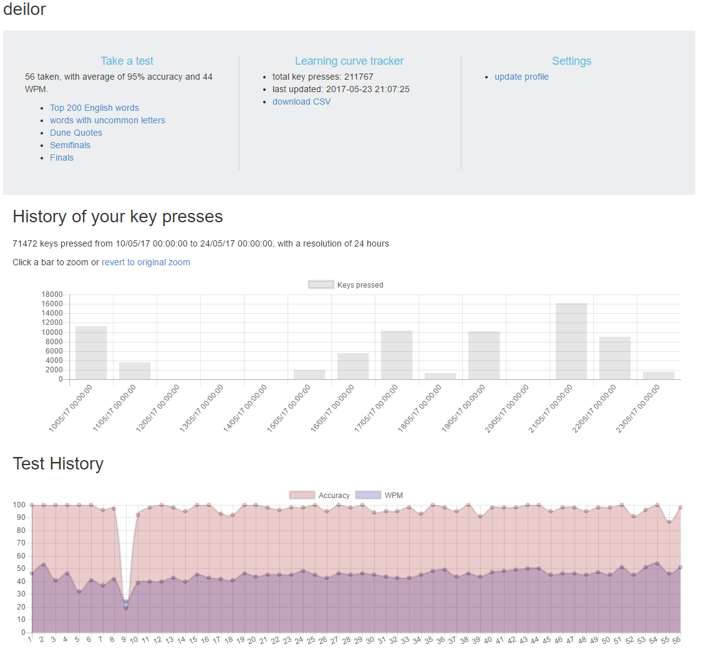
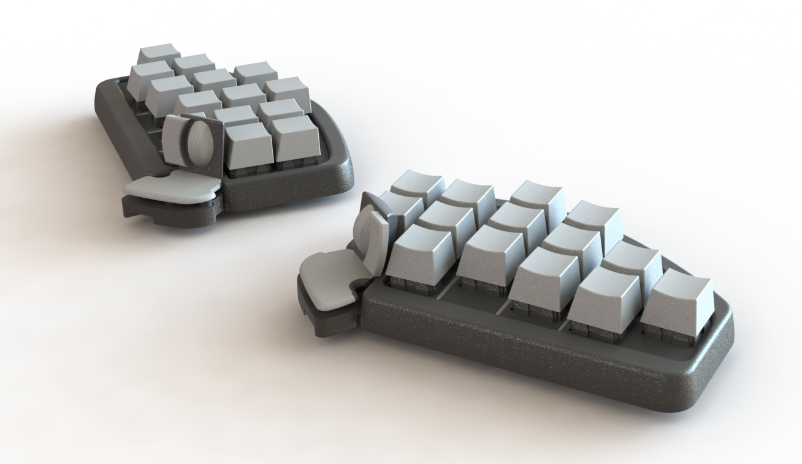

It’s been a month since we started the Closed beta and we’ve learnt a ton.
Most things that we planned failed but to be honest, we expected it. We were doing something we’ve never done before but we knew that we had to expose ourselves to improve fast. Even though we mis-planned and our execution wasn’t the best, we were able to learn extremely valuable lessons.Two months ago we already experienced something similar while fabricating the v5s and this time we were ready and we totally embraced failing.
Maybe it’s weird to think about it this way but when you fail fast and learn fast it’s a huge success. You reduce time and money spent and get closer to your goal. And our goal for the closed beta was to learn about our users and improve towards the final product.
For the closed beta we created documentation to install the software and set up the layouts, a website where we could track our Shortcut usage and improvement and where we could run typing tests too:

We encouraged users to install our software, practice and report on issues and while around half did, the other half didn’t. To encourage people to practice typing we ran a typing knockout bracket tournament and under a 1/4 of the testers took part on it.
After analyzing the information and answers from the forum and the questionnaire and testing a few things there was a clear conclusion: there were way too many barriers for testers.
Since day one of this project we knew that our biggest challenge would be to smooth the learning curve of the Shortcut but that wasn’t the problem. The real problem was that before even starting to use the Shortcut, the testers need to make a massive effort just to make the keyboard work. The keyboard was border useless out of the box (very big mistake) because it had a testing firmware that was there to check every key worked properly. So, after receiving the package testers had to:
And finally you are ready to use the Shortcut.
We didn’t realize how much effort our testers had to do before being able to properly use the Shortcut. And knowing that our product already requires effort to learn, it’s a must that it requires absolutely no effort to set up. Understanding this, we started working on improving our user experience.
The first thing to improve was clear: have a software that in a few minutes guides you through how to adjust the Shortcut to your hands and how to effortlessly configure layouts.
In one afternoon we created an extremely simple mockup of the software and the next day we showed it to a few people. With their feedback we did a new version and repeated the process a few more times. In less than a week we had this:
With the “1st time here” and “Ergonomic Adjustment” sections ready we showed it to 10 more users, all really liked it and gave us a ton of feedback. We are already working on an improved version, removing all text and explaining everything with images, gifs and short videos.
We got very good comments on the “Improve your Shortcut skills” idea. We know that we want to have mini games and fun typing tests but we are still figuring out the first steps to develop it. If you have any ideas about fun minigames to play with the Shortcut, pleases drop us a comment on @shortcutgg
With the closed beta lessons learnt, our goal is to create an amazing user experience. Setting up and learning how to use the Shortcut must be as closer as possible to effortless and enjoyable. If we accomplish it then the learning curve will be smoother and shorter and there will be a much higher chance that the Shortcut is a success.
Creating this user experience will require a lot of effort, very well designed software and probably quite some money but it’s totally doable.
While running the closed beta, with all the feedback gathered of the V5, we’ve started working on the V6. We’ve already 3D printed a few mechanical iterations (size, shape, movement) of the thumbs and bodies and we are halfway through the electronics.
We are implementing many improvements that we will soon share with you next week. In the meantime, here is a render of the V6 without palm rests.
